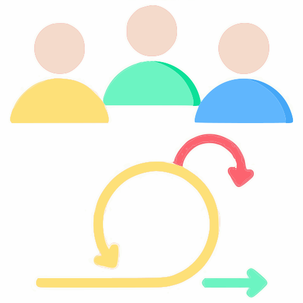
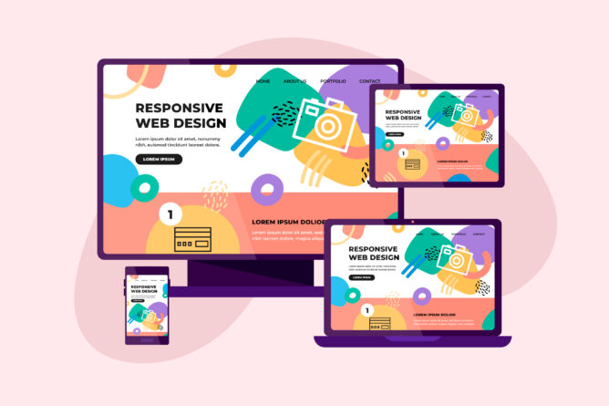

Экосистема React и TypeScript.
О себе
Люблю превращать идеи в красивые и удобные веб‑страницы с HTML, CSS, JavaScript и React.
Когда не пишу код, играю с AI‑инструментами, экспериментирую с дизайном и наслаждаюсь путешествиями.
Давай создадим что-то классное вместе!
С чем я работаю
Frontend-разработка


React + TypeScript
Основы


Backend и логика
Node.js + TypeScript
Серверная логика, разработка API и производительность.
Базы данных


SQL и NoSQL.
Инструменты и системы


Контейнеризация, контроль версий и администрирование.
Современные инструменты
AI-разработка
Эффективное программирование с Cursor, Copilot и LLM.
Гибкие навыки

Agile-мышление, работа в команде, коммуникация.
UI / Дизайн


Figma и адаптивная верстка.